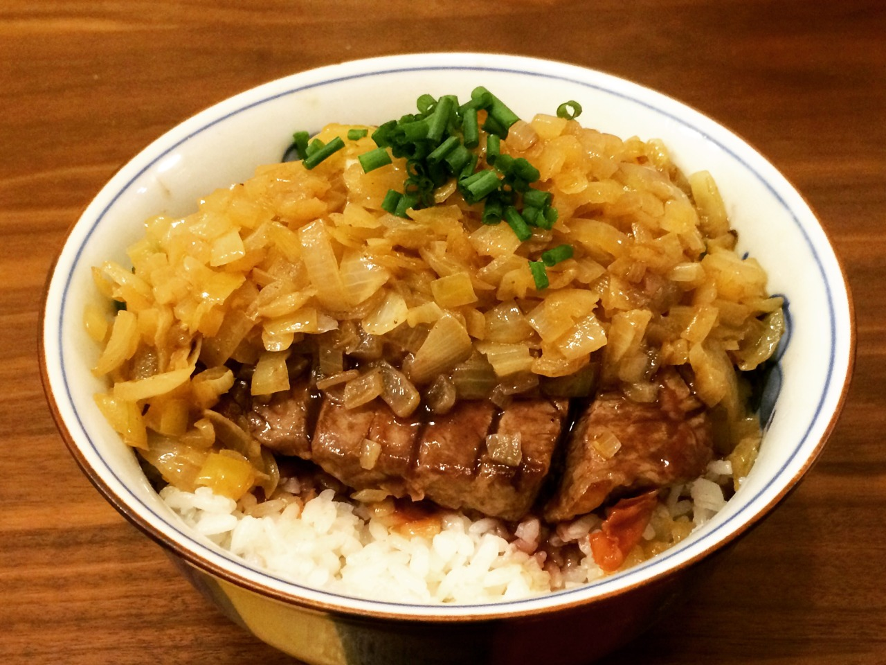
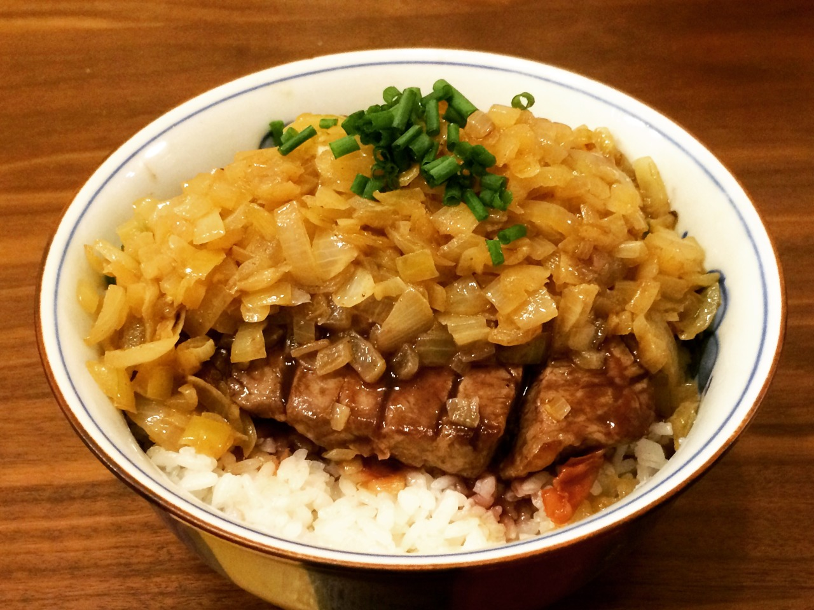

Chaliapin Steak Don
 

Description
Chaliapin Steak is a tender tasting steak invented in Japan. Although it is not new, curiosity about the dish has increased recently because of the Japanese anime Food Wars! : Shokugeki No Soma.
Ingredients
- 250g Sirloin steak
- 1½ Onion, diced
- 300g Short-grain Japanese rice, cooked
- 1 Tbsp pickled plum paste (Umeboshi)
- Salt
- Pepper
- Potato starch
- Green onions, chopped
- 4 Tbsp red wine
- 2 Tbsp soy sauce
- 2 Tbsp butter
Steps
- Mince the onion. Tenderise the steak, then cover with chopped onions. Rest it for an hour. Then remove onions and sprinkle the meat with salt and pepper.
- Melt butter in a skillet and sauté the onions. Add salt and pepper. Set aside the onion.
- Add some cooking oil to skillet. Cook the beef till golden brown on both sides. Remove the beef and let it rest on the side.
- Add red wine to the skillet, mixing with meat juice. Once reduced, add the onions again and sauté. Then, add butter, soy sauce and potato starch. Let the flavours blend into a sauce.
- Next, mix umeboshi with cooked rice. Then, slice the steak meat into bite-sized pieces. Arrange the slices on your rice.
- Finally, pour the sauce with onions on the top of your Chaliapin steak and rice. Sprinkle chopped green onion on your donburi.
- SERVE
Return to homepage